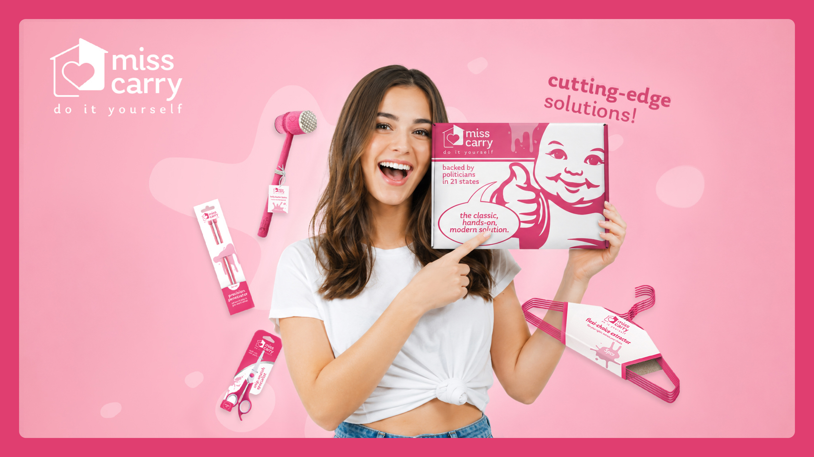
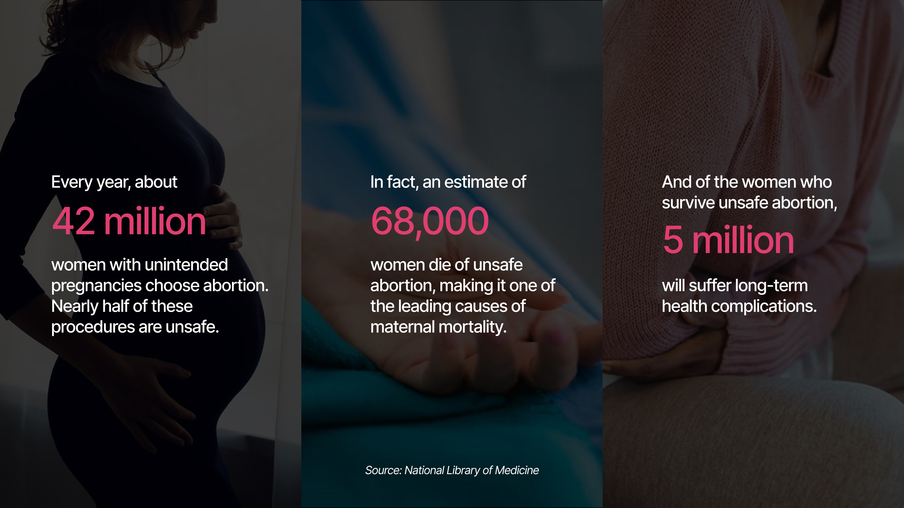
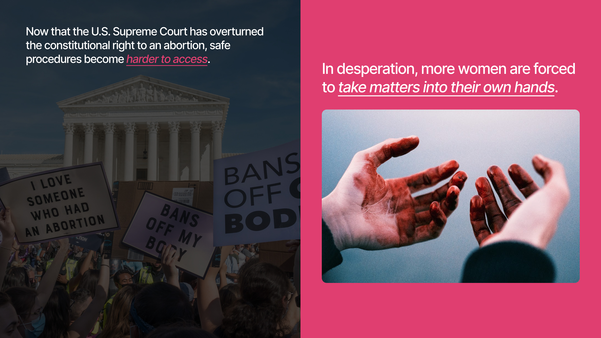

miss carry D.I.Y.
Advertising Campaign
Art Direction
2024
“To create a product and advertising campaign that raises awareness and support for an issue relating to the ongoing attacks on women’s freedom.”
During my internship at The Secret Little Agency (TSLA), my internmate and I were given a project called the "Mother Brief", to create a product and campaign concept that raises awareness and support for an issue relating to the ongoing attacks on women’s freedom. We collaborated as an art director and copywriter duo, doing everything from the ideation, visual execution and pitching stage to our superiors and CEOs.
My Contributions
Timeline
Team members
The Problem: Unsafe Abortions due to bans in various U.S. States.
Every year, about 42 million women with unintended pregnancies choose abortion. And nearly half of these procedures are unsafe. In fact, an estimate of 68,000 women die of unsafe abortion, making it one of the leading causes of maternal mortality. And of the women who survive unsafe abortion, 5 million will suffer long-term health complications.
Now that the U.S. Supreme Court has overturned the constitutional right to an abortion, safe procedures become harder to access. In desperation, more women are forced to take matters into their own hands.


The Creative Response: A Satire D.I.Y Household brand with "everything you need" for Unsafe Abortions.
Our campaign uses biting satire to spark a deeper conversation about reproductive rights. By leaning into the irony of "D.I.Y." healthcare, we highlight the dark reality women face when the government fails to provide essential services, exposing the dangerous consequences of denied abortion care. We help women turned away from proper abortion care, to do it themselves.

miss carry Home Kit
"We introduce a new home product.
One that no one can simply ignore."
The kit that has the perfect items for an at-home-abortion. Each item is a tool women have used to cause a miscarriage when their options run out.

The Big Gesture
We send our kit to the Supreme court to confront the dangers of banning safe abortions and urge reconsideration of their decisions. Then, we try and prove how safe our kit is by deliberately seeking FDA disapproval, highlighting that despite containing everyday household items, these are the very same items women resort to when legal and safe abortions are unavailable.

Media Spotlight
The rollout of our campaign will spark media interest, highlighting the kit as a desperate alternative to abortion, and a consequence to the overturn of Roe V Wade.

Now that we’ve fired up the U.S. to talk about miss carry, it’s time to launch it to the public and ensure they know we exist to support women’s abortion rights. Unlike abortion services, we make our products accessible.
“Never Again” Brooch
We present a tangible symbol for supporters to proudly declare their stand for women's abortion rights.
/misscarry_enamel pin.jpg)
miss carry Target Display
We present a tangible symbol for supporters to proudly declare their stand for women's abortion rights.

At the same time, We boost our message with eye-catching ads outside state capitols.
Billboards
At the same time, We boost our message with eye-catching billboard ads outside state capitols which ban abortion, sending a message to legislators.